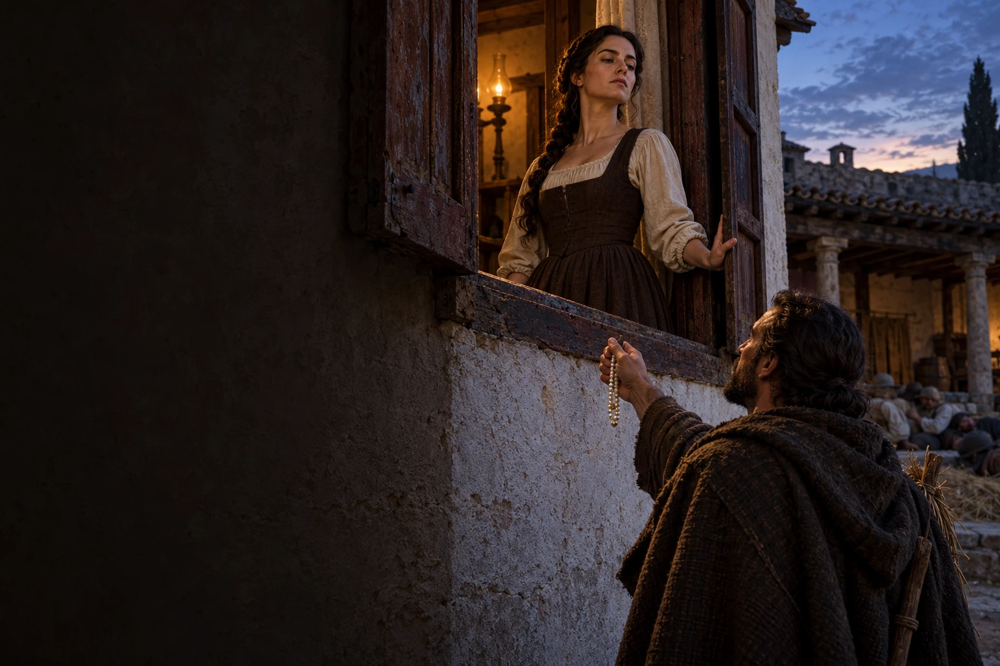
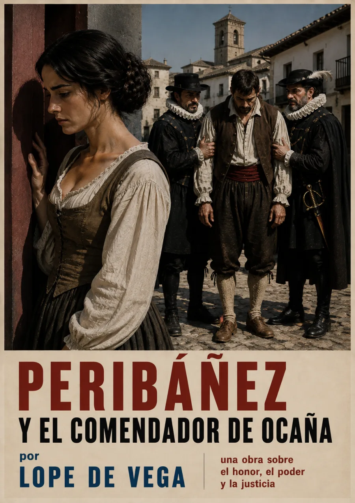

Audiolibros · Primera Ola
Lope de Vega · Primera publicación: 1614
Peribáñez
y el comendador
de Ocaña
La dignidad no se compra.
Él ofrece joyas.
Casilda le cierra el paso.

Una voz que no se doblega.
y el comendador de Ocaña
Grabación próximamente
Volumen

Una ventana frente al poder
El comendador se acerca disfrazado de segador, pero Casilda no acepta su cortejo. Desde la ventana lo rechaza; cuando él revela su identidad y promete joyas, ella llama a los trabajadores de la casa. La escena convierte un umbral doméstico en el límite que un hombre poderoso se niega a respetar.
El rango no concede derecho sobre la voluntad ajena.
Lope sitúa a Casilda y Peribáñez, un matrimonio de labradores, frente a una autoridad que confunde deseo con privilegio. La obra entrelaza intimidad, honra y violencia hasta llevar el conflicto ante el rey. La dignidad campesina ocupa el centro del drama, aunque su reconocimiento final todavía depende de la justicia monárquica.
Primera publicación: Madrid, 1614, en la Cuarta parte de las comedias de Lope. Edición y fecha · Biblioteca Virtual Miguel de Cervantes. La ventana y el falso segador · Acto II. La imagen interpreta el rechazo de Casilda y el ofrecimiento de las perlas.
La lectura
Lectura completa
Grabación próximamente. La lectura de la obra estará disponible aquí. Las grabaciones se incorporarán cuando estén preparadas.
Valoración

Bueno